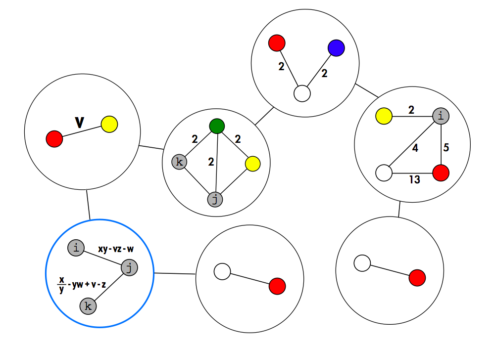
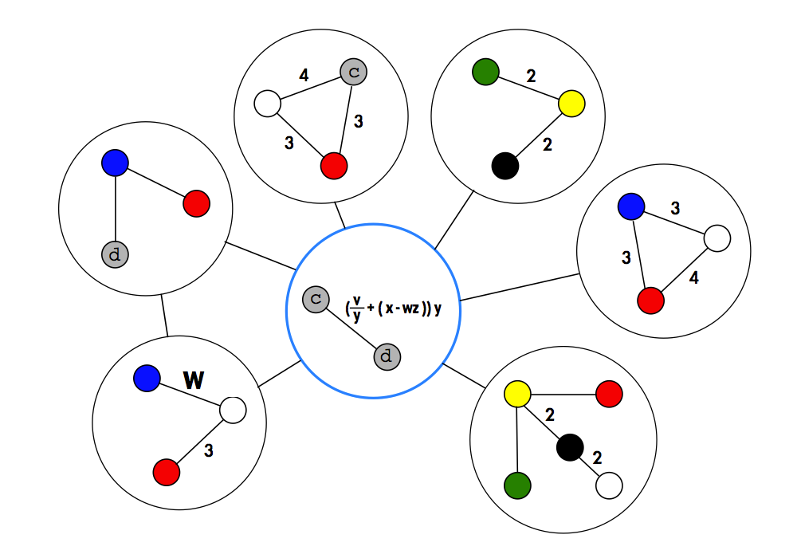
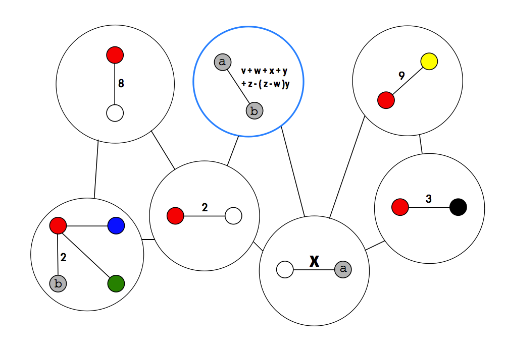
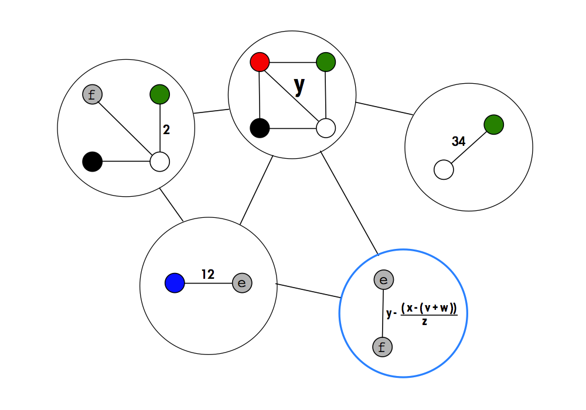
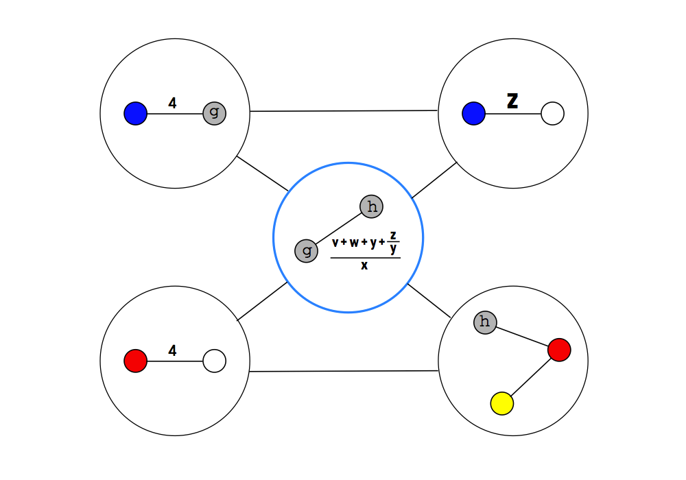

Vertexillonomy (Solution)
by Ali Lloyd, Katie Steckles, and Paul Taylor
This puzzle represents flags by their colour adjacency graphs. The graphs in the black circles represent country flags and each image is itself an land border adjacency graph. This allows one to deduce the values of the variables v-z and the colours a-k, and complete the graphs in the blue circles, which represent adjacent seas.
The countries (clockwise from top left), and seas are:
CHINA, BURMA, THAILAND, MALAYSIA, INDONESIA, JAPAN; EAST CHINA SEA

COLOMBIA, CUBA, JAMAICA, PUERTO RICO, ST. KITTS & NEVIS, PANAMA; CARIBBEAN SEA

GEORGIA, MACEDONIA, ALBANIA, GREECE, TURKEY, AZERBAIJAN; AEGEAN SEA

SYRIA, JORDAN, SAUDI ARABIA, ISRAEL; DEAD SEA

SWEDEN, FINLAND, GERMANY, DENMARK; BALTIC SEA

That the blue circles represent seas is a hint to the fact that the flags therein are adjacency graphs of maritime signal flags. Ordering by the name of the sea (helpfully from A-E) gives the answer NIGHT.
| Sea | Flag | Letter |
|---|---|---|
| AEGEAN |  |
N |
| BALTIC |  |
I |
| CARIBBEAN |  |
G |
| DEAD |  |
H |
| EAST CHINA |  |
T |
It is unfortunate that the graph for T is the same as the one for W. We toyed with the idea of adding extra information, but decided that with a clear ordering mechanism the answer would never be in doubt!